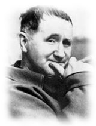
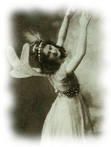
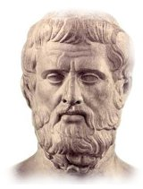
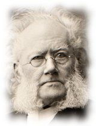
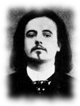

Novenario
Novena Fiesta de las Artes Escénicas en Medellín
Por Cristóbal Peláez
Día primero:
San Enrique Buenaventura, patrono de la Creación Colectiva
Estoy muerta. Nací aquí, en este pueblo. En la casita de barro rojo con techo de paja que está al borde del camino, frente a la escuela. El camino es un río lento de barro rojo en el invierno y un remolino de polvo rojo en el verano.
Desde hace tiempo el miedo llegó a este pueblo y se quedó suspendido sobre él como un inmenso nubarrón de tormenta. El aire huele a miedo, las voces se disuelven en la saliva amarga del miedo.
Letanías
Teatro, socórreme.
Duermo. Despiértame.
Estoy perdida en la oscuridad, guíame, al menos, hacia una luz.
Soy perezosa, avergüénzame.
Día Segundo:

San Bertolt Brecht, patrono de la dialéctica
El peor analfabeto es el analfabeto político. No oye, no habla, no participa de los acontecimientos políticos. No sabe que el costo de la vida, el precio de los frijoles, del pan, de la harina, del vestido, del zapato y de los remedios, dependen de decisiones políticas. El analfabeto político es tan burro que se enorgullece y ensancha el pecho diciendo que odia la política. No sabe que de su ignorancia política nace la prostituta, el menor abandonado, y el peor de todos los bandidos que es el político corrupto, mequetrefe y lacayo de las empresas nacionales y multinacionales.
Letanías
Teatro, socórreme.
Estoy cansada, estoy fatigado, levántame.
Soy indiferente, golpéame.
Sigo siendo indiferente, golpéame en el rostro.
Día Tercero

Santa Isadora Duncan, inmaculada patrona de la danza
Me dedicaba a leer todo lo que se había escrito en el mundo sobre el arte de la danza, desde los primeros egipcios hasta el día, y tomaba nota especial de todo lo que iba leyendo; pero cuando hube terminado esta tarea colosal, comprobé que los únicos maestros de baile que yo podía tener eran Jean Jacques Rousseau, Walt Whitman y Federico Nietzsche.
Letanías
Teatro, socórreme.
Tengo miedo, dame coraje.
Soy ignorante, edúcame.
Soy monstruosa, humanízame.
Día Cuarto

San Esquilo, patrono protector de la Tragedia
Súplica: “Que nunca la peste vacíe de hombres la ciudad, ni el bárbaro tiña de sangre de cuerpos indígenas la llanura de su tierra. Que la flor de la juventud no sea segada, ni que el amante de Afrodita, Ares, azote de los humanos, la tronche en su capullo. Que resplandezcan llenos de ofrendas los altares en los cuales se reúnen los ancianos, así la ciudad prospere en el respeto a Zeus poderoso, hospitalario en grado sumo, que con ancestral ley rige el destino. Os pedimos que nuevos nacimientos sin cesar proporcionen protectores al país, y que Artemis Hécate vigile el alumbramiento de las mujeres. Que ningún azote mortífero venga sobre esta ciudad destrozándola, armando a Ares, enemigo de danzas y cítaras, engendrador de lágrimas, y suscite los clamores de la guerra civil. Que el enjambre doloroso de las enfermedades se coloque lejos de la cabeza de los ciudadanos, y Apolo Liceo sea propicio a todos sus niños. Haga Zeus que en todo tiempo y estación produzca la fecunda tierra frutos sazonados, y que los rebaños pueblen la pradera herbosa de numerosas crías. Que sobre los altares los rapsodas pongan un canto de buena suerte, y que de labios puros salga la voz amante de la música”.
Letanías
Teatro, socórreme.
Soy pretenciosa, hazme morir de risa.
Soy cínica, desármame.
Soy tonta, transfórmame.
Día Quinto
San William Shakespeare, patrono inventor del género humano
¡He aquí la excelente estupidez del mundo; que, cuando nos hallamos a mal con la Fortuna, lo cual acontece con frecuencia por nuestra propia falta, hacemos culpables de nuestras desgracias al sol, a la luna y a las estrellas; como si fuésemos villanos por necesidad, locos por compulsión celeste; pícaros, ladrones y traidores por el predominio de las esferas; beodos, embusteros y adúlteros por la obediencia forzosa al influjo planetario, y como si siempre que somos malvados fuese por empeño de la voluntad divina! ¡Admirable subterfugio del hombre putañero, cargar a cuenta de un astro su caprina condición! Mi padre se unió con mi madre bajo la cola del Dragón y la Osa Mayor presidió mi nacimiento; de lo que se sigue que yo sea taimado y lujurioso. ¡Bah! Hubiera sido lo que soy, aunque la estrella más virginal hubiese parpadeado en el firmamento cuando me bastardearon".
Letanías
Teatro, socórreme.
Soy mala, castígame.
Soy dominante y cruel, combáteme.
Soy pedante, búrlate de mí.
Día Sexto

San Henrik Ibsen, patrono de las mujeres en crisis
He vivido de las piruetas que hacía para recrearte. Eso entraba en tus fines. Tú y papá han sido muy culpables conmigo, y ustedes tienen la culpa de que yo no sirva para nada. No he sido feliz en esta casa, creía serlo, pero no lo he sido jamás. Nuestra casa solo era un salón de recreo. He sido una muñeca grande en tu casa, como fui muñeca en casa de papá. Y nuestros hijos, a su vez, han sido mis muñecas. Esto es lo que ha sido nuestra unión, una Casa de Muñecas.
Letanías
Teatro, socórreme.
Soy vulgar, elévame.
Soy muda, desamordázame.
Ya no sueño, trátame de cobarde o de imbécil.
Día Séptimo
San Samuel Beckett, patrono de la penuria y el vacío.
Estoy aquí...
Letanías
Teatro, socórreme.
He olvidado, arroja sobre mí la memoria.
Me siento vieja y rancia, haz surgir la niñez.
Soy pesada, dame la música.
Día Octavo

San Alfred Jarry, patrono poliédrico de las soluciones imaginarias.
Es en vano que tenga un anillo formado por cuatro piedras que me conceden total autoridad sobre el mundo de los espíritus, de los animales, de la tierra y de los vientos. No me acuerdo ya de las divisas inscritas sobre las cuatro piedras, sino de mi máxima del águila de que, por muy larga que sea la vida, no es más que un retraso de la muerte. Y me acuerdo también de la sentencia del gallo: Pensad en Dios, hombres ligeros. Pero la máxima más bella de todas es la del halcón, de que es preciso tener piedad de los demás hombres. Para obedecer a las dos máximas, la del halcón y la del gallo, quisiera haber acabado mi templo, a fin de que Dios sea dignamente glorificado después de mí entre los hombres. Después de mi muerte, ningún hombre podrá manejar mi anillo sin ser reducido a ceniza, y los espíritus que por mi orden edifican el templo se dispersarán en un torbellino.
Letanías
Teatro, socórreme.
Soy triste, dame la alegría.
Soy sorda, haz aullar el dolor como una tempestad.
Me siento agitada, haz surgir la sabiduría.
Día Noveno
San Tennessee Williams, patrono de la poesía dramática
BLANCHE (adelantándose más hacia la izquierda): —¡Stanley actúa como un animal, tiene los hábitos de un animal! ¡Come como un animal, se mueve como un animal, habla como un animal! ¡Hasta hay en él algo de... subhumano...! ¡Algo que no ha llegado aun a la etapa humana! Sí... ¡Tiene algo de simiesco, como esas láminas que he visto en... los estudios antropológicos! Miles y miles de años han pasado de largo a su lado y ahí lo tienes. Stanley Kowalski... ¡el sobreviviente de la Edad de Piedra! ¡Ahí lo tienes, llevando a su casa la carne cruda de la presa que acaba de matar en la selva! Y tú... tú estás aquí... ¡esperándolo! ¡Quizá te golpee, o tal vez gruña y te bese! ¡Eso, si se han descubierto ya los besos! (Avanza a primer término.) ¡Anochece, y los demás gorilas se reúnen! ¡Ahí, delante de la caverna, todos están gruñendo como él, bebiendo y mordiendo y moviéndose con pesada torpeza! ¡Su partida de póquer! ¡Así llamas tú a esa... fiesta de gorilas! Alguien gruñe... Uno de esos animales intenta apoderarse de algo... ¡y ya empezó la gresca! ¡Dios mío! Puede ser que distemos mucho de estar hechos a la imagen de Dios, pero, Stella... (Se sienta junto a Stella y la rodea con el brazo.) Hermana mía... ¡se han hecho algunos progresos desde entonces! ¡Ya han aparecido en el mundo cosas como el arte... como la poesía y la música! ¡En algunas personas han empezado a nacer sentimientos más tiernos! ¡Tenemos que acrecentarlos! ¡Y aferrarnos a ellos, y retenerlos como nuestra bandera! En esta oscura marcha hacia lo que está cada vez más próximo... ¡No te quedes atrás... no te quedes atrás con los brutos!
Letanías
Teatro, socórreme.
Soy débil, enciende la amistad.
Soy ciega, convoca a todas las luces.
Estoy sometida por la fealdad, haz entrar la belleza conquistadora.
Fui arrastrada por el odio, haz surgir todas las fuerzas del amor.
Los textos del Novenario corresponden en su orden:
La maestra, Buenaventura;
¡Auxilio!, Ariane Mnouchkine;
Los analfabetas políticos, Brecht;
Mi vida, Isadora Duncan;
Las suplicantes, Esquilo;
El Rey Lear, Shakespeare,
Casa de muñecas, Ibsen;
Beckett;
Narración de Salomón, Jarry,
Un tranvía llamado deseo, T. Williams.
Publicado en el Periódico de Medellín en Escena - Edición No. 30. Agosto - Octubre / 2013